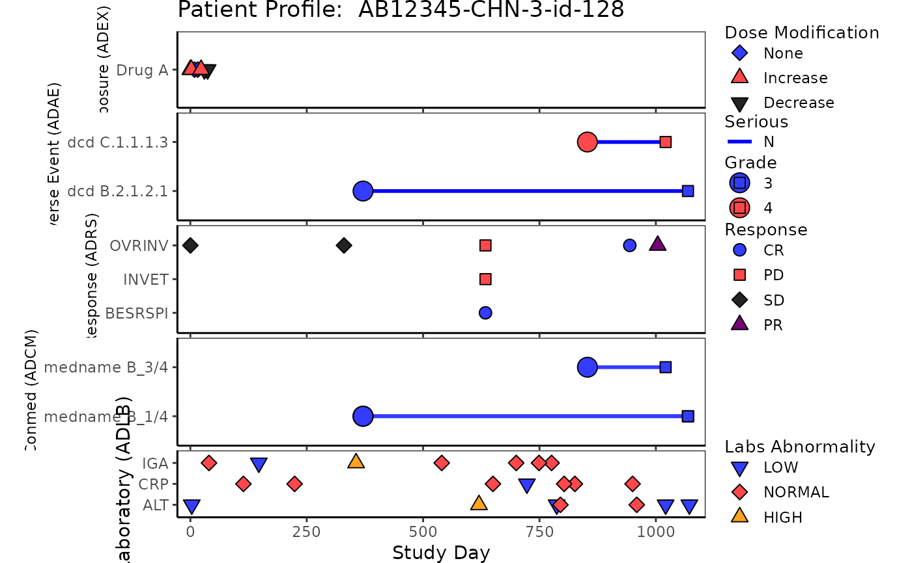
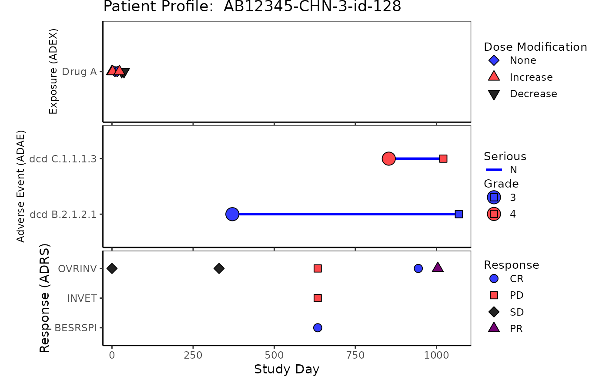

Patient profile plot provides detailed information for a specific subject participating in the study.
The plot includes relevant data for one subject that can help correlate adverse events, response,
concomitant medications, exposure, and laboratory. The plotting of patient profile is modularized, with
each domain plot generated by function patient_domain_profile. This g_patient_profile
function assembles all requested domain plots into one patient profile.
ADSL, ADEX, ADAE, ADRS, ADCM and ADLB data must be provided.
The plot output will not include domains with data unspecified
Usage
g_patient_profile(
ex = NULL,
ae = NULL,
rs = NULL,
cm = NULL,
lb = NULL,
arrow_end_day,
xlim = c(-28, 365),
xlab = "Study Day",
title = "Patient Profile"
)Arguments
- ex
-
list may contain
datadataframe forADEXdomain datasetvarvector to identify each lane ofADEXdomain plot
- ae
-
list may contain
datadataframe forADAEdomain datasetvarvector to identify each lane ofADAEplotline_colfactor vector to specify color for segments ofADAEplotline_col_legendstring to be displayed as line color legend title ofADAEplotline_col_optaesthetic values to map line color values ofADAEplot (named vector to map color values to each name). If notNULL, please make sure this contains all possible values forline_colvalues, otherwise color will be assigned byggplotdefault, please note thatNULLneeds to be specified
- rs
-
list may contain
datadataframe forADRSdomain datasetvarvector to identify each lane ofADRSdomain plot
- cm
-
list may contain
datadataframe forADCMdomain datasetvarvector to identify each lane ofADCMdomain plot
- lb
-
list may contain
datadataframe forADLBdomain datasetvarvector to identify each lane ofADLBdomain plot
- arrow_end_day
numeric value indicates the end of arrow when arrows are requested
- xlim
numeric vector for x-axis limit that will be shared by all domain plots, default is
xlim = c(-28, 365)- xlab
string to be shown as x-axis label, default is
"Study Day"- title
string to be shown as title of the plot, default is
"Patient Profile"
Author
Xuefeng Hou (houx14) houx14@gene.com
Molly He (hey59) hey59@gene.com
Ting Qi (qit3) qit3@gene.com
Examples
library(scda)
library(dplyr)
library(nestcolor)
cached_data <- synthetic_cdisc_data("latest")
# ADSL
rADSL <- cached_data$adsl
ADSL <- rADSL %>%
filter(USUBJID == rADSL$USUBJID[1]) %>%
mutate(
TRTSDT = as.Date(TRTSDTM),
max_date = max(as.Date(LSTALVDT), as.Date(DTHDT), na.rm = TRUE),
max_day = as.numeric(as.Date(max_date) - as.Date(TRTSDT)) + 1
) %>%
select(USUBJID, STUDYID, TRTSDT, max_day)
# ADEX
rADEX <- cached_data$adex
ADEX <- rADEX %>%
select(USUBJID, STUDYID, ASTDTM, PARCAT2, AVAL, AVALU, PARAMCD)
ADEX <- left_join(ADSL, ADEX, by = c("USUBJID", "STUDYID"))
ADEX <- ADEX %>%
filter(PARAMCD == "DOSE") %>%
arrange(PARCAT2, PARAMCD) %>%
mutate(diff = c(0, diff(AVAL, lag = 1))) %>%
mutate(Modification = case_when(
diff < 0 ~ "Decrease",
diff > 0 ~ "Increase",
diff == 0 ~ "None"
)) %>%
mutate(ASTDT_dur = as.numeric(
as.Date(substr(as.character(ASTDTM), 1, 10)) -
as.Date(TRTSDT) + 1
))
# ADAE
rADAE <- cached_data$adae
ADAE <- rADAE %>%
select(USUBJID, STUDYID, AESOC, AEDECOD, AESER, AETOXGR, AEREL, ASTDY, AENDY)
ADAE <- left_join(ADSL, ADAE, by = c("USUBJID", "STUDYID"))
# ADRS
rADRS <- cached_data$adrs
ADRS <- rADRS %>%
select(USUBJID, STUDYID, PARAMCD, PARAM, AVALC, AVAL, ADY, ADTM)
ADRS <- left_join(ADSL, ADRS, by = c("USUBJID", "STUDYID"))
# ADCM
rADCM <- cached_data$adcm
ADCM <- rADCM %>%
select(USUBJID, STUDYID, ASTDTM, AENDTM, CMDECOD, ASTDY, AENDY)
ADCM <- left_join(ADSL, ADCM, by = c("USUBJID", "STUDYID"))
# ADLB
rADLB <- cached_data$adlb
ADLB <- rADLB %>%
select(
USUBJID, STUDYID, LBSEQ, PARAMCD, BASETYPE, ADTM,
ADY, ATPTN, AVISITN, LBTESTCD, ANRIND
)
ADLB <- left_join(ADSL, ADLB, by = c("USUBJID", "STUDYID"))
ADLB <- ADLB %>%
group_by(USUBJID) %>%
mutate(ANRIND = factor(ANRIND, levels = c("LOW", "NORMAL", "HIGH")))
# Example Patient Profile plot 5 domains
g_patient_profile(
ex = list(
data = ADEX,
var = ADEX$PARCAT2
),
ae = list(
data = ADAE,
var = ADAE$AEDECOD,
line_col = factor(ADAE$AESER),
line_col_legend = "Serious",
line_col_opt = c("Y" = "red", "N" = "blue")
),
rs = list(
data = ADRS,
var = ADRS$PARAMCD
),
cm = list(
data = ADCM,
var = ADCM$CMDECOD
),
lb = list(
data = ADLB,
var = ADLB$LBTESTCD
),
arrow_end_day = ADSL$max_day,
xlim = c(-28, ADSL$max_day),
xlab = "Study Day",
title = paste("Patient Profile: ", ADSL$USUBJID)
)
#> Warning: `guides(<scale> = FALSE)` is deprecated. Please use `guides(<scale> = "none")` instead.
#> Warning: `guides(<scale> = FALSE)` is deprecated. Please use `guides(<scale> = "none")` instead.
#> Warning: `guides(<scale> = FALSE)` is deprecated. Please use `guides(<scale> = "none")` instead.
#> Warning: `guides(<scale> = FALSE)` is deprecated. Please use `guides(<scale> = "none")` instead.

# Example Patient Profile plot without ADCM and ADLB
g_patient_profile(
ex = list(
data = ADEX,
var = ADEX$PARCAT2
),
ae = list(
data = ADAE,
var = ADAE$AEDECOD,
line_col = factor(ADAE$AESER),
line_col_legend = "Serious",
line_col_opt = c("Y" = "red", "N" = "blue")
),
rs = list(
data = ADRS,
var = ADRS$PARAMCD
),
arrow_end_day = ADSL$max_day,
xlim = c(-28, ADSL$max_day),
xlab = "Study Day",
title = paste("Patient Profile: ", ADSL$USUBJID)
)
#> Warning: `guides(<scale> = FALSE)` is deprecated. Please use `guides(<scale> = "none")` instead.
